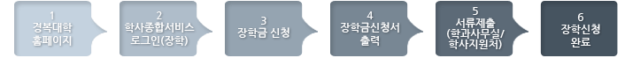

유틸메뉴


주요메뉴


홈
경복소개
환영합니다
총장인사말
장학
장학금이란?
매 학기 부담해야 하는 등록금은 크건 작건 누구에게나 부담 되기 마련이다. 이때 장학금이야말로 성취감을 얻는 것은 물론 경제적인 면에서 부담을 덜기에 아주 좋은 제도라고 할 수 있다. 장학금은 크게 교내장학금과 교외장학금으로 나뉜다. 장학금에 대한 세부적인 정보는 각 학과실이나 학생지원처에서 얻을 수 있다. 교외장학금은 교외 단체 (장학재단, 개인 또는 단체)에서 지급하는 장학금으로 각 장학단체 등에서 정한 기준에 따라 장학생을 선정하고 지급하게 된다.
내가 받을 수 있는 장학금은
※ 국가장학금은 졸업예정자를 제외한 모든 재학생(복학예정자 포함)이 대상이오니 한분도 빠짐없이 신청하여 주시기 바랍니다.
| 구분 | 장학금 | 장학생 선발조건 | 비고 | |
|---|---|---|---|---|
| 학업 | 1종 | 학과별 성적순 (성적우수장학금 배정기준표에 의하여 배정) 별도의 신청없이 자동선발 단, 국가장학금 신청을 반드시 하셔야 합니다. [우당성적장학배정(안)] |
수업료 전액 | |
| 우당성적장학 | 2종 | 수업료의 70% | ||
| 3종 | 수업료의 50% | |||
| 4종 | 수업료의 30% | |||
| 5종 | 수업료의 15% | |||
| 6종 | 수업료의 10% | |||
| 신입생성적우수장학 | 1종 | 입학성적이 전체수석인자에게 지급 | 등록금 1년간 지급 | |
| (2학기 수업료는 직전학기 성적 평점평균이 3.5이상) | (입학금 및 수업료) | |||
| 2종 | 입학성적이 과수석자에게 지급 | 한 학기 수업료 100% | ||
| 해외연수 장학 | 세계화를 향한 진취적인 자세와 자기능력개발을 위하여 운영되는 어학연수 / 해외문화탐방 / 해외봉사 / Global Experience Program은 장학위원회의 심의를 거쳐 대상학생을 선발하며, 연수에 참여한 학생은 연수실시 후 보고의 의무가 있으며 제15조의 이중수혜 제한의 적용을 받지 않는다. | 어학연수경비지원 | ||
| 가. 어학연수 어학연구소에서 주관하는 소정의 평가 및 성적사정을 거친 후 어학성적을 기준 장학위원회에서 선발 |
||||
| 해외인턴십 장학 | 해외인턴십 프로그램 참여자에게 장학금 지급 | 일정금액 | ||
| 근로 | 충효장학 | 1종 | 행정부서, 각 학부(과) 사무실, 실습실에서 학부(과)업무, 강의보조 등 교내 학무수행에 근로를 제공하는 자 09:00~17:00까지 조교활동(학과사무실등)이 가능한 자 강의 시간외 여가시간을 활용하여 일정시간 조교활동(실습실등)이 가능한 자 |
시간당 5,000원 |
| 2종 | 시간당 5,000원 | |||
| 3종 | 시간당 5,000원 | |||
| 국가근로장학금 | 교내(행정사무실,정보지원센터,디자인연구소,도서관, 실습실) 교외(전공관련산업체) |
시간당: 6,000원 | ||
| 시간당: 8,000원 | ||||
| 선덕봉사장학 | 1종 | 학훈 정신이 투철하고 품행이 타의 모범이 되어 바람직한 대학인으로 칭찬할만한 자에게 지급 | 일정금액 100만원 | |
| [활동보고서] | ||||
| 2종 | 학교발전에 봉사 기여한 자에게 지급 | 일정금액 50만원 | ||
| 복지 | 복지1종 장학 | 국가장학금(기초생활수급자 장학) 수혜조건을 충족하는 자에 한해 등록금 총액에서 국가장학금(기초생활수급자 장학)을 제외한 나머지 금액을 지급 | 복지1종장학 = 수업료-국가장학금 |
|
| 복지2종 I | 교육과학기술부(한국장학재단)에서 제공하는 소득분위 정보를 기준으로 1분위~2분위에 해당하는 대상자 중 80점(100점기준)이상자에게 수업료의 30%를 지급 | 수업료의 30% | ||
| 복지2종 II | 소득분위 3분위~5분위에 해당하는 자 중 평점평균 2.0이상자에게 수업료의 20%를 지급 단, “등록금에 관한 규칙” 경제적인 사정이 곤란한 학생 지원 30%의 조건이 충족하지 않을 경우 소득분위 범위를 순차적으로 확대 적용 |
수업료의 20% | ||
| 보훈 | 국가유공자 및 직계자녀로서 학업성적이 총점평균 70점 이상이며 장학금 신청기간에 신청한 자 ※ 신규신청자 대학등록금 등 면제대상자 증명서 제출 |
장학금 : 수업료의 100% 본인 : 학교지원 100% 자녀 : 학교 50% 보훈처 50% ※국가장학금 반드시 신청 |
||
| 관학협력 | 관학협력기관 추천자 대상: 입학생(1학기 시행) |
|||
| 경복사랑 교직원장학 | 본교 재직중인 교직원 또는 직계 자녀가 본교에 수학할 경우 (직전학기 평점평균 2.5 이상) |
|||
| 경복가족 장학 | 본 대학에 직계가족이 2명이상 재학시 1명의 학생에게 장학금을 지급하며, 장학위원회의 심의를 거쳐 확정한다. (직전학기 평점평균이 3.5 이상 ) | 수업료의 50% | ||
| 특별장학 | 학교 설립이념 구현 및 면학분위기 조성에 앞장서 학교발전에 기여한 공로가 인정되는 자, 또는 가계곤란 자격외의 경제적인 어려움을 겪고 있는 것으로 판단되는 자를 학부(과) 추천을 받아 장학금 지급 | 수업료의 50% | ||
| 특별재해장학 | 국가특별재난지역 및 천재지변으로 인하여 물질적으로 피해를 받은 학생의 경우 일정금액을 지급하며, 장학위원회의 심의를 거쳐 확정한다. | 장학위원회가 정하는 금액 |
||
| 기타 | 경복마일리지장학 | 학교활동의 성과를 항목별(학업, 근로)로 평가하여 마일리지 만큼 장학금 혜택을 제공한다. 단, 장학에 적용되는 마일리지는 재학 기간 중 취득한 항목에 대해서만 적용되며, 장학금 지급은 장학위원회의 심의를 거쳐 결정된다. 봉사활동확인서 양식(반대표, 행정근로) 교내봉사활동 확인서(행사진행지원) | 2011학년도경력마일리지 포인트 인정기준 현황표 |
|
※ 장학내용은 추진사항에 따라 변경될 수 있습니다.
※ 장학금 지급은 등록금 고지서 상 우선감면을 원칙으로 하나, 지급성격에 따라 예외로 할 수 있다
교외장학
- 아상사회복지재단장학금
- 성일장학재단장학금
- 농촌희망재단장학금
- 쌍용곰두리장학금
- 국가장학금Ⅰ, Ⅱ유형
- 기쁜우리장학금
- 전문대우수학생장학금
- ㈜다일장학금
- (사)대한미용사회메이크업위원회장학
- 대한나래출판사장학금
- 고문사장학금
- 진광전원교회장학금
- 하늘꿈희망장학회장학금
- IBK기업은행장학금
- 한국네일미용사회장학금
- 메디인병원장학금
- 배암장학재단장학금
- ㈜스피코장학금
- ㈜약손명가장학금
- 준오헤어장학금
- 수문사장학금
- 동문장학금
- 의용소방대자녀장학금
- 경희치과병원장학금
- 오성장학재단장학금
- 한국레크레이션치료협회장학금
- 남양주지역세무사회장학금
교외장학금은 교외 장학단체(장학재단, 개인 또는 단체)에서 지급하는 장학금으로 장학단체 또는 개인, 단체 등에서 자격조건을 정하였을 경우 그 조건을 갖춘 자에게 지급되며, 경제적으로 학비마련이 곤란한자로서 품행이 방정하고 장래가 촉망되는 학생을 우선적으로 추천한다. 지급기준은 각 장학단체별로 차이가 있다.
장학금을 이중 수혜 하였을 경우, 장학생으로서 품위를 손상하여 학교의 명예를 실추시킨 경우, 장학단체의 자체규정에 의거 자격이 상실되었을 경우에는 장학금 수혜 자격을 박탈할 수 있다.
장학금 신청은 이렇게

1. 경복대학 홈페이지 -> 2. 학사종합서비스 로그인(장학) -> 3. 장학금신청 -> 4. 장학금신청서 출력 -> 5. 서류제출(학과사무실/학사지원처) -> 6. 장학신청 완료
장학금 지금 제한 사항은?
자격 제한
- 당해 학기 평균 평점이 2.0 미만인 자
- 당해 학기 취득학점이 15학점 미만인 자
- 학생상벌규칙에 따른 징계처벌을 받고 처벌일 학기를 포함 두 학기를 경과하지 아니한 자
이중 수혜 제한
교내외 각종 장학금은 이중으로 지급할 수 없다. 다만, 총장의 허가를 득한 경우에는 예외로 할 수 있다
예외
- 학비지원 목적을 갖지 않는 장학은 제한하지 아니한다.(예 : 해외연수)
- 수업료 內의 교외장학금 수혜는 제한하지 아니한다.(교내외 장학금 수혜금액이 수업료를 초과할 수 없다.)
장학금 지급 중지, 취소, 반환
- 1. 선발된 장학생이 2번사항에 해당하는 경우에는 장학금을 지급중지, 취소하며,기 지급된 장학금 전액을 반환하여야 한다
- 2. 지급 중지, 2취소, 반환의 사유
- 가. 유기정학 이상의 징계처분을 받은 경우
- 나. 휴학하는 경우(단, 미등록 휴학자에 한함)
- 다. 퇴한한 경우(자퇴포함)
- 라. 장학생으로서 품위를 손상하여 학교나 학과의 명예를 실추시키는 행위를 한 경우
- 마. 장학금의 포기, 해당 업무의 태만, 해임되었을 경우
| 제목 | 작성자 | 작성일 |
|---|---|---|
| 계절학기문의드립니다 | 이상호 | 2014-01-07 |
| 계절학기 온라인 수강 | 박소연 | 2014-01-06 |
| 영어재수강 수강료납부 문의 | 이진영 | 2014-01-06 |
- 담당자 : 이정은 (jelee@kbu.ac.kr)(jelee@kbu.ac.kr)
- 전화번호 : 031-570-9542